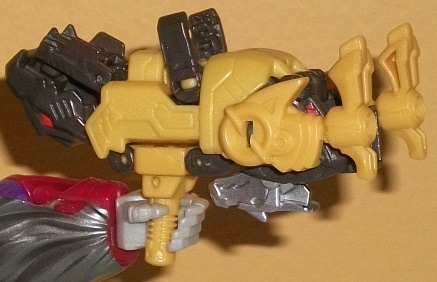
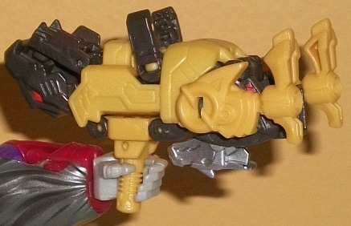

(NOTE: Because this is a repaint, this is not a full-blown review. This mainly covers any changes made to the mold and the color scheme, and merely compares it to Titans Return Crashbash. For a review on the mold itself, read the review of Titans Return Crashbash here .)
Clobber is pretty obviously
meant to be a Titans Master version of Grimlock, as-- in addition to this
set having a tyrannosaurus rex mode-- the only mold change to this set
compared to Crashbash is that Clobber has a new headsculpt for the Titan
Master's head mode which is most definitely Grimlock. It's a pretty solid
headsculpt, too-- all of the necessary sculpted details are there, like
the small side forehead "ears", the center vent on the forehead, and a
segmented faceplate that looks almost like it has clenched teeth behind
it. There's also a really nice metallic black paint on the Grimlock head
that's used nowhere else on the set, and a nice red paint on the visor
that contrasts against the metallic black very well. Unfortunately the
Titan Master's robot mode is completely unchanged mold-wise when compared
to Crashbash's robot mode. So no, Clobber's robot mode unfortunately doesn't
look at all like a mini Titan Master Grimlock. As for the color scheme,
the main two colors are a rather dark brownish gray and a fairly dull mustard-y
yellow. Just like much of Clobber, it VAGUELY resembles Grimlock in terms
of the color scheme, though the gray is darker and browner and the yellow
is duller too and not as "gold". The two colors go together moderately
well, though I wish there was a somewhat bright color in there to help
"brighten up" the color scheme just a bit. There is a bit of silver on
the pterodactyl head/tail, as well as a few red highlights on the t-rex
head, some vents on the accessory's main body, and, as mentioned before,
also on the head mode (oddly none on the pterodactyl eyes). Again, I wish
there was a bit more paint here to spice things up-- either more red or
silver really would've worked well.
Other than the new headsculpt,
no mold changes have been made to Clobber.
Clobber is pretty much
only a recommendation from me if you really want a Grimlock head for one
of your Titans Return toys. There's three different versions of this mold,
and I think this color scheme is the least exciting of them-- plus, the
Titan Master's robot mode really doesn't fit Grimlock at all. It's also
not that great of a Titan Master set (though not outright horrible for
$5 U.S.), so as a whole Clobber just seems mostly pointless/unneeded.
No Stats
Review by Beastbot